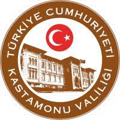
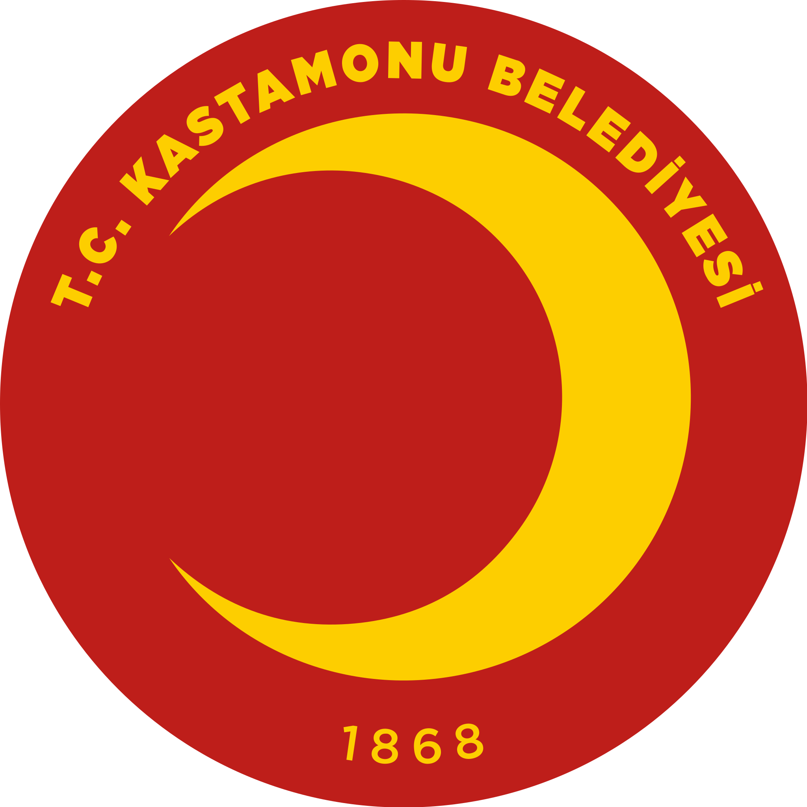
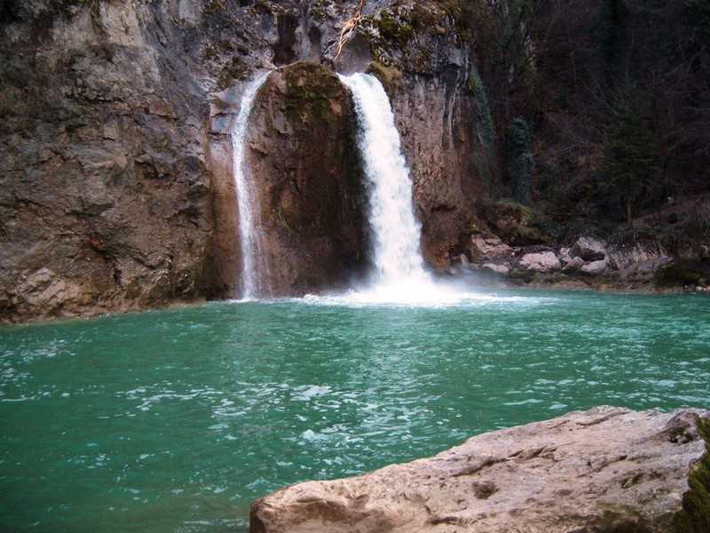
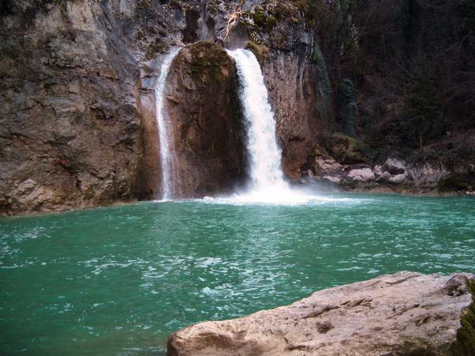

1).Konum
Kastamonu, Türkiye Cumhuriyeti'nin Karadeniz Bölgesi'nde yer alan Kastamonu ilinin merkez şehridir.
2).Etimoloji
Kastamonu isminin türemesi hakkında birçok fikir vardır; Bir görüşe göre Kastamonu şehri ismini, Hitit döneminde aynı bölge için kullanılan Kastama isminden almıştır. Kastama ismi zamanla Kastamonu'ya dönüşmüştür.
Bir başka görüşe göre Kastamonu şehri ismini, Gas ve Tumanna kelimelerinin birleşiminden almıştır. Gaslar ya da bilinen adıyla Kaşkalar Kastamonu'nun ilk yerleşimcilerindendir. Tumanna ise o dönemde Kastamonu üzerinde bulunan bir şehir/bölge ismidir. Bu iki kelimenin birleşimi, zamanla Kastamonu şeklini almıştır.
Üçüncü bir görüşe göre ise Kastamonu şehri ismini, Kastra ve Komnen kelimelerinin birleşiminden almıştır. Kastra kelimesi Latince "kale" demektir. Komnenler ise, bir Bizans Hanedanı olup bu bölgenin Bizans dönemindeki yerleşimcileridir. Bu iki kelime zamanla Kastamonu şeklini almıştır.
3).Tarihçe
Kastamonu, tarihsel olarak Castamon, şehir, kuzey-orta Türkiye. Gök (antik Amnias) Nehri yakınında yer almaktadır. Şehir, yoğun nüfuslu Karadeniz kıyı ovasının güneyinde, seyrek nüfuslu bir yüksek havzada yer almaktadır.
Castamon olarak Fırat Nehri'ne giden kuzey ana yolu üzerindeydi ve 11. yüzyılın sonlarında Selçuklu Türkleri tarafından ele geçirilen önemli bir Bizans kasabasıydı. Gelecek yüzyılda rakip emirler tarafından alındı ve 1393'te Osmanlı İmparatorluğu'na dahil edilmeden önce bir süre başka bir Müslüman beyliğin koltuğuydu. Kayda değer yapılar arasında, eski şehrin etrafında kümelendiği kayalık bir tepe üzerinde harap bir Bizans kalesi yer alıyor. ; ilahiyat fakültesi, cami ve yoksullar için bir bakımevi (16. yüzyıl) içeren bir grup dini bina; ve renkli bir kapalı çarşı (16. yüzyıl).
Modern Kastamonu bakır kaplarıyla ünlüdür ve bir şeker fabrikasına sahiptir. Şehrin küçük bir müzesi ve öğretmen yetiştiren bir okulu var. Pop. (2000) 64.606; (2013 tahmini) 96.217.
4).İklim
İlde iki çeşit iklim hüküm sürer. Kuzeyinde Karadeniz iklimi güneyinde ise İç Anadolu'nun kara iklimi görülür. Kıyıya paralel olarak uzanan İsfendiyar Dağları, Karadeniz ikliminin iç kısma girmesini önler. Kıyılarda yağış daha fazladır. Senede 20 gün kar yağar, 40 gün toprak karla örtülüdür. Sıcaklık -26,9° ile +38,7 °C arasında seyreder. Senelik yağış miktarı bölgelere göre 450 mm ile 1215 mm arasında değişir.
5).Kültür
Kastamonu'daki tipik köy yemekleri, şekerli su, sitrik asit ve gül mayası ile yapılan hızlı bir gül reçelini içerir - gül mayası, gül mayasının şeker ve sitrik asitle hazırlanmış, onları koruyan ve lezzetini ve kokusunu ortaya çıkaran bir müstahzardır. . Ev yapımı acı sos, rendelenmiş domates, sarımsak, Türk kırmızı biber, acı biber, ayçiçek yağı, tuz ve karabiberin ocakta kaynatılmasıyla yapılır. Tatlı katmer, un, tuz ve sudan tahin ve ayçiçek yağı karışımına bulanarak katlanarak basit bir mayasız hamur hazırlanarak yapılır.
Kahvaltıda köy peyniri, zeytin, pekmez, patates kızartması, gül reçeli ev yapımı acı sos, tavada sıcak servis edilen yumurtalar ( sahanda yumurta denir), katmer denilen katmerli mayasız ekmek, taze çiftlik sütü ve siyah çay olabilir.
Kastamonu Taşköprü'ye özgü, taze kesilmiş bütün kuzu, ağzı kapalı, hava geçirmez bir "kuyuda" parlayan ahşabın közleri üzerinde ağır ağır pişirilir - bu yöresel spesiyaliteye Türkçe'de kuyu kebabı denir. Bir tepsiye eklenen biraz su, buharın pişirme işlemi boyunca eti nemli tutmasını sağlar.
 T.C.Kastamonu Valiliği  Katamonu Belediyesi Kastamonu Hava

Kastamonu Hava
